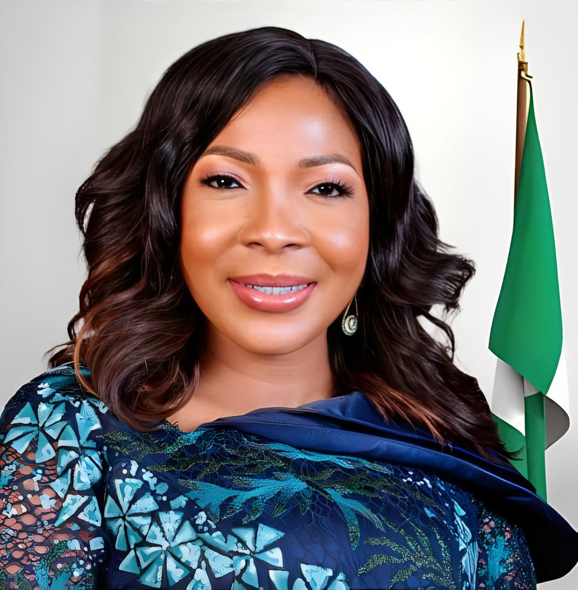
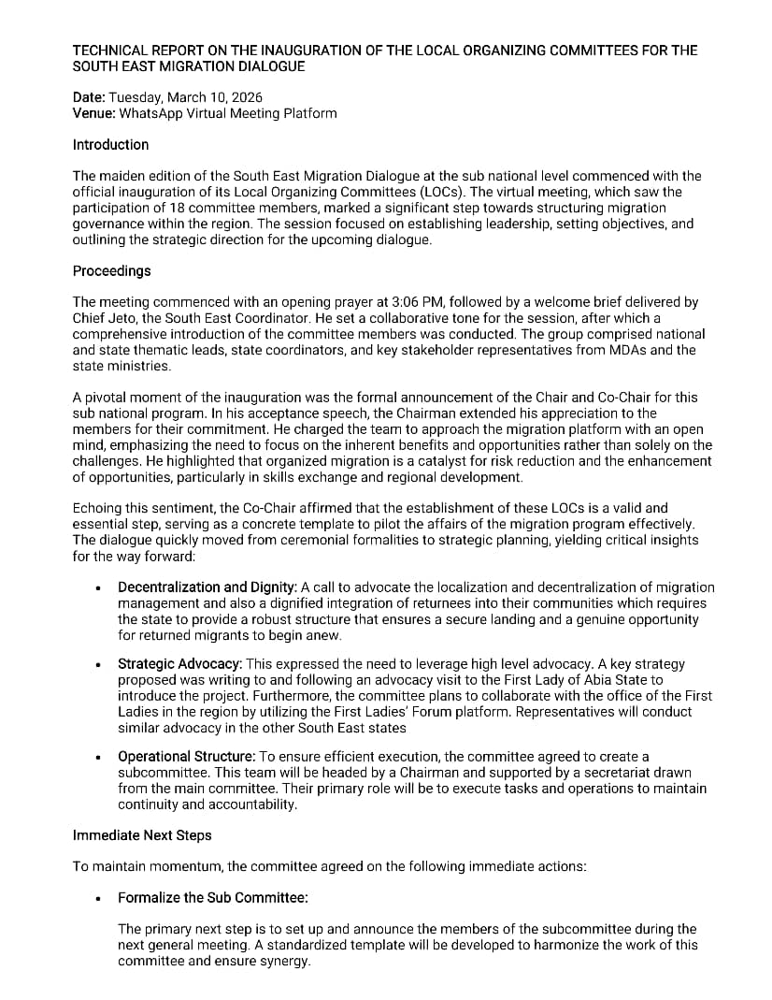

Distinguished First Ladies championing migration governance and development in the region

As Chief Host of SEMD 2026, Her Excellency has been a formidable advocate for women and youth empowerment, with a strong focus on creating safe migration pathways and protecting vulnerable populations. Through her "Nneoma Foundation," she has championed skills acquisition programs that equip young people with employable skills, reducing the push factors of irregular migration. Her leadership in promoting regular migration channels and her commitment to the welfare of returnees and internally displaced persons have positioned Abia State as a model for humane migration governance in Nigeria.

Her Excellency is a renowned public health advocate and the driving force behind the "Healthy Living with Nonye Soludo" initiative, which addresses the health vulnerabilities of migrants and returnees. She has been instrumental in establishing trauma counseling centers for victims of human trafficking and irregular migration in Anambra State. Her "Solution Innovation District" program creates legitimate economic opportunities for youth, directly countering the economic desperation that fuels irregular migration. She is a vocal proponent of diaspora engagement for sustainable development.


Her Excellency is a passionate humanitarian and the founder of the "GoodHope Flourish Foundation," which provides rehabilitation and reintegration support for returnees and victims of human trafficking. She has pioneered the establishment of state-level migration resource centers in Imo State, offering pre-departure counseling, skills training, and legal assistance to prospective migrants. Her advocacy for the rights of women and children in migration has led to stronger bilateral cooperation with destination countries on safe migration protocols and victim protection.

Her Excellency is a distinguished educationist and the visionary behind the "Nkechinyere Mbah Foundation," which focuses on youth empowerment through education and vocational training as sustainable alternatives to irregular migration. She has been at the forefront of campaigns against human trafficking in Enugu State, partnering with law enforcement and civil society to dismantle trafficking networks. Her "Safe Migration Enlightenment" program has reached thousands of communities, educating families on the dangers of irregular migration and the benefits of regular pathways.

Her Excellency is a dedicated advocate for rural development and youth employment, leading the "Uzoamaka Nwifuru Empowerment Initiative" which has created thousands of jobs in agriculture and agro-processing, significantly reducing youth unemployment as a driver of irregular migration. She has established Ebonyi State's first comprehensive migration data collection system, enabling evidence-based policy formulation. Her work in promoting the socio-economic reintegration of returnees through cooperative farming schemes has become a benchmark for other states in the region.
Distinguished experts and thought leaders shaping migration policy discourse
A globally recognized migration governance scholar with over three decades of experience in international migration management. Prof. Ahonsi has advised numerous African governments on the development of national migration policies and has been instrumental in shaping Nigeria's migration governance architecture. His research on the nexus between migration and development has influenced regional policy frameworks across West Africa. He will deliver the keynote address on "The 2025 National Migration Policy: Opportunities and Challenges for Sub-National Implementation."
Dr. Mohammed-Baloni is a leading authority on diaspora engagement and remittance mobilization for national development. She has spearheaded Nigeria's bilateral labor migration agreements with multiple countries, ensuring the protection of Nigerian workers abroad. Her groundbreaking work on "Diaspora Bonds" has unlocked new financing mechanisms for infrastructure development. She will speak on "Harnessing the South East Diaspora Potential: From Remittances to Sustainable Investment."
An accomplished economist and development strategist, Governor Soludo brings unparalleled expertise in macroeconomic policy and structural transformation. During his tenure as Governor of the Central Bank of Nigeria, he implemented far-reaching financial sector reforms that stabilized the economy and created employment opportunities. His current "Anambra Vision 2070" places strong emphasis on human capital development and job creation as antidotes to irregular migration. He will address "Economic Transformation and Migration: Building Opportunities at Home."
A legal luminary and tireless anti-trafficking crusader, Dr. Okah-Donli transformed NAPTIP into Africa's most effective anti-human trafficking agency during her leadership. She pioneered victim-centered approaches to prosecution and rehabilitation, securing landmark convictions against trafficking syndicates. Her advocacy led to the strengthening of Nigeria's legal framework on human trafficking and the establishment of specialized courts. She will deliver a powerful address on "Combating Human Trafficking: A Multi-Stakeholder Imperative for the South East."
Amb. Olanrewaju is a distinguished diplomat and human rights advocate who has dedicated his career to the protection of forcibly displaced populations across Africa. As the AU Special Rapporteur, he has conducted fact-finding missions to conflict zones and produced influential reports that have shaped continental policy on internal displacement. His expertise in the Kampala Convention and international refugee law makes him uniquely positioned to speak on "Protecting the Displaced: Strengthening Regional Responses to Internal Displacement in the South East."
CSOnetMADE zonal and state-level coordinators driving migration governance at the grassroots

Leading the strategic direction and coordination of the South East Migration Dialogue. Responsible for overall planning, stakeholder engagement, and ensuring the successful implementation of dialogue objectives in alignment with the 2025 National Migration Policy. Dr. Ukuwa brings extensive experience in civil society governance and has been pivotal in securing high-level political buy-in for the dialogue.
A seasoned public servant and cleric, Ven. Dr. Onyeaguocha brings a unique blend of administrative acumen and compassionate leadership to the LOC. As Permanent Secretary of Imo State Ministry of Humanitarian Affairs, she has overseen the implementation of comprehensive humanitarian response frameworks for displaced populations and returnees. Her dual-state perspective enriches the committee's approach to regional migration governance.

Serving as Secretary of the Local Organizing Committee, responsible for documentation, correspondence, and minutes of meetings. Key liaison between the LOC and CSOnetMADE national secretariat. Chioma ensures seamless communication flow and maintains accurate records of all committee deliberations and decisions, providing the administrative backbone for the dialogue's success.

Coordinating regional efforts across the five South East states and ensuring alignment with national migration policy objectives. Leading advocacy initiatives and stakeholder engagement at the zonal level. Chief Nwadi has been instrumental in building the CSOnetMADE network across the region and fostering collaboration between state governments and civil society on migration governance.
Strategic partners and institutional collaborators supporting the dialogue
The National Coordinator provides overarching strategic guidance and ensures that the South East Migration Dialogue aligns with CSOnetMADE's national agenda on migration governance. As the convener of the network, the Coordinator facilitates linkages between the regional dialogue and federal-level policy processes, international partners, and donor agencies. CSOnetMADE has been at the forefront of advocating for the domestication of the National Migration Policy at the sub-national level and the establishment of state-level migration coordination structures.
The Federal Commissioner represents the Nigerian government's commitment to the protection and welfare of refugees, migrants, and internally displaced persons. NCFRMI provides technical guidance and ensures alignment with national migration governance frameworks under the 2025 National Migration Policy. The Commission supports the institutionalization of state-level migration coordination structures and provides policy frameworks for the integration of migration considerations into state development plans. The Commission's presence underscores the federal government's endorsement of the dialogue.
The International Organization for Migration brings global expertise and technical support on migration governance, assisted voluntary return, and reintegration programs to the South East Migration Dialogue. IOM contributes to data collection and analysis on migration trends, supports capacity building for state and non-state actors, and facilitates international best practice sharing. The organization's Migration Governance Framework (MiGOF) provides the analytical lens through which the dialogue assesses state-level migration governance readiness. IOM's partnership ensures that the dialogue's outcomes are aligned with international standards and commitments.
Dedicated sub-committees working behind the scenes to ensure dialogue success
Responsible for delegate mobilization and outreach across the South East states
Handling media relations, publicity, and documentation of the dialogue
Managing venue arrangements, catering, and event logistics
Responsible for drafting the dialogue communique and reports
Managing budget, sponsorship, and financial matters
Engaging private sector for sustainable funding mechanisms
Interested in contributing to the South East Migration Dialogue? Get in touch with us.
Contact Us